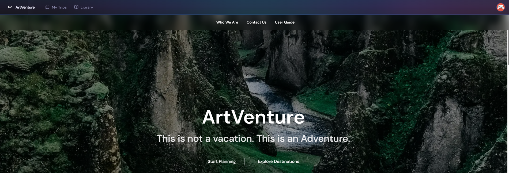

A trip-planning platform built around one question every travel app quietly guesses at: will this day actually work — given real drive times, real opening hours, and Iceland's extreme daylight swings. ArtVenture computes the answer deterministically instead of guessing.

Every planner lets you drag places onto a calendar — none tell you, with confidence, whether the day you just built is actually achievable. ArtVenture's feasibility engine doesn't guess: given a start time and an ordered list of stops, it walks the chain — each arrival is the previous departure plus drive time, each departure is arrival plus that stop's visit duration — and checks the result against opening hours, timed bookings, and daylight.
The engine returns a verdict — GREEN / YELLOW / RED — with the specific reason, never a vague warning. It never auto-fixes; the traveler keeps the judgment, the system gives the evidence.
A conventional full-stack shape carries an unconventional core: a route optimizer and a rules-based verdict engine sitting where most trip apps would just render a map on top of someone else's routing API.
Discovery library filtered by country, region, and category. The percentage badge on each card is a confidence score surfaced from the discovery pipeline that merges four different place-data sources into one record.
Drafts, dates, and status surfaced up front, sortable by recency, upcoming date, or name.
Reordering a day's stops is a small traveling-salesman problem. Rather than reach for a heavy solver, I used a nearest-neighbor heuristic: keep the starting point fixed, then repeatedly jump to whichever unvisited stop is closest by actual travel time. It's not globally optimal, but it's fast, predictable, and good enough for the <10-stop days ArtVenture actually deals with — and every suggestion is re-validated against the feasibility engine before it's ever shown, so an "optimization" that trades one violation for another gets rejected rather than surfaced.
// Visit remaining blocks by nearest-neighbor (using travel time)
while (visited.size < items.length) {
let nearestItem: DayItemWithBlock | null = null;
let nearestTime = Infinity;
for (const item of items) {
if (visited.has(item.id)) continue;
const { travelTimeMinutes } = getTravelTimeBetweenBlocks(
current.block, item.block, "DRIVE"
);
if (travelTimeMinutes < nearestTime) {
nearestTime = travelTimeMinutes;
nearestItem = item;
}
}
optimizedOrder.push(nearestItem);
visited.add(nearestItem.id);
current = nearestItem;
}Adding a stop mid-route needs a different problem solved: not "reorder everything," but "where does this one new stop cost the least?" detour.ts tries every insertion position and keeps the cheapest.
// Insert between i-1 and i
const originalTime = getTravelTimeBetweenBlocks(prevBlock, nextBlock, "DRIVE");
const timePrevToNew = getTravelTimeBetweenBlocks(prevBlock, newBlock, "DRIVE");
const timeNewToNext = getTravelTimeBetweenBlocks(newBlock, nextBlock, "DRIVE");
const addedTime = (timePrevToNew + timeNewToNext) - originalTime;
if (addedTime < minAddedTime) {
minAddedTime = addedTime;
bestIndex = i;
}Both use a synchronous, cache-first lookup for travel time — real Mapbox routing when cached, a Haversine-distance estimate when it isn't — so reordering never blocks on a network call.
A live Mapbox route render for a day's active stops — the line follows whatever order optimizer.ts and detour.ts currently hold.
The travel-time chips between stops (206 min, 257 min) are exactly the numbers segment.ts and detour.ts compute, recalculated live as stops are added, moved, or reordered.
An original feature, not a wired-up library: a 1–5 "how tiring is this day" score, built from total time used, stop count, and whether the day includes a long tour. It's a heuristic I designed and tuned myself, backed by a real test suite covering the edge cases that broke it during development — null durations, undefined travel times, empty days.
const baseLoad = totalTimeHours / DAY_CAP_HOURS;
const extraStops = Math.max(0, activeStops - COMFORT_STOPS);
const stopPenalty = extraStops * PENALTY_PER_EXTRA_STOP;
const tourPenalty = hasHeavyTour ? HEAVY_TOUR_PENALTY : 0;
const finalLoad = baseLoad + stopPenalty + tourPenalty;
if (finalLoad <= 0.35) level = 1; // Light day
else if (finalLoad <= 0.55) level = 2; // Easy day
else if (finalLoad <= 0.75) level = 3; // Moderate day
else if (finalLoad <= 0.95) level = 4; // Busy day
else level = 5; // Heavy dayit('should never return NaN values', () => {
// Extreme case: all null values
const result = computeBattery(items, [null, undefined]);
expect(Number.isNaN(result.level)).toBe(false);
expect(Number.isNaN(result.load)).toBe(false);
expect(Number.isNaN(result.breakdown.baseLoad)).toBe(false);
expect(result.level).toBeGreaterThanOrEqual(1);
expect(result.level).toBeLessThanOrEqual(5);
});The timeline is the scheduling core — it turns an ordered list of stops plus travel segments into real clock times. The feasibility engine then walks that timeline and checks each arrival against opening hours and daylight, producing a hard ERROR or a soft WARNING depending on how reliable the underlying place data is.
A late arrival only becomes a hard ERROR if the place data is HIGH confidence, verified within the last year, and has no beta flags — otherwise it's downgraded to a WARNING. The system doesn't block a trip over data it isn't sure of.
Route timing never blocks on a live API call. segment.ts checks for cached Mapbox routing first, and silently falls back to a Haversine distance estimate if there's no cache — same interface either way.
if (!isOpen && closingTime) {
const isReliable = isDataReliable(block); // HIGH confidence, verified <1yr, no beta flags
const severity = isReliable ? "ERROR" : "WARNING";
violations.push({
type: "ARRIVAL_AFTER_CLOSE",
blockName: block.name,
message: `Arrives ${eta} · closes ${closingTime}`,
severity,
});
}// ETA(block_i) = ETA(block_i-1) + duration(block_i-1) + travelTime(i-1 → i)
for (let i = 0; i < activeRoute.length; i++) {
orderedBlocks.push({ id: item.id, name: item.block.name, eta: currentTime });
currentTime = addMinutes(currentTime, item.block.recommendedDuration);
if (i < activeRoute.length - 1) {
currentTime = addMinutes(currentTime, travelTimes[i]);
}
}